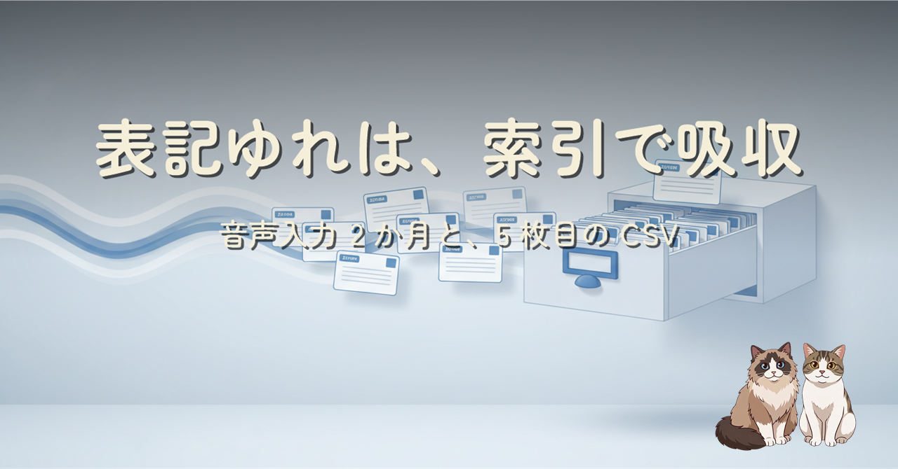

入力の主経路が音声になって 2 か月。同じ対象が正式名・英字・略称・誤変換の 4 通りの文字列で AI に届くようになり、台帳が正しくても「呼び名から正体への解決」が推測頼みになりました。表記ゆれを事実ではなく索引と捉え直し、5 枚目の CSV で吸収した設計判断の記録です。
前作「組織の暗黙知は 4 枚の CSV で足りている」の続編です。音声入力ではカタカナの社名が同音の漢字に化けるなど、同じものを指す文字列が増え続けます。最初は台帳に aliases 列を足しましたが、正式な事実の隣に誤変換を永久保存する気持ち悪さから同日に撤回。表記ゆれは「検索を助ける索引」という性格の違うデータだと整理し、正体（正式名と id）を行内に同居させた縦持ちの呼称索引 CSV に分離しました。
列で持つか専用ファイルに分けるかの判断基準、そして誤変換を「直す」から「登録する」へ発想を反転させた話まで、実際の運用から書いています。